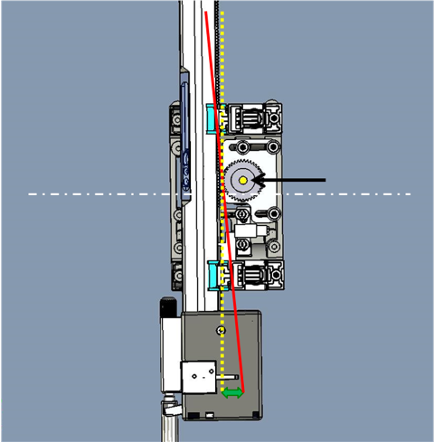
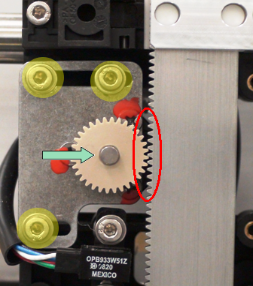
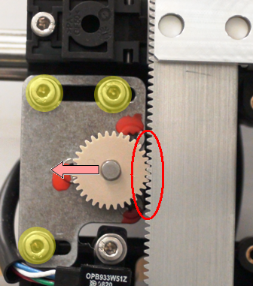
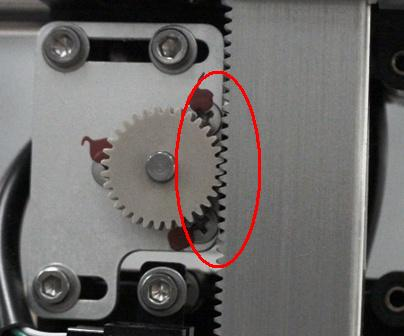
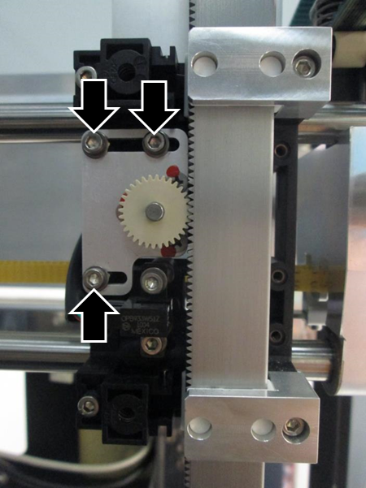
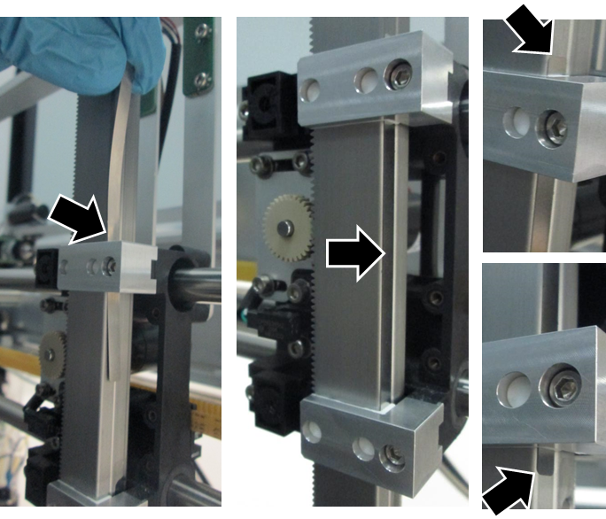
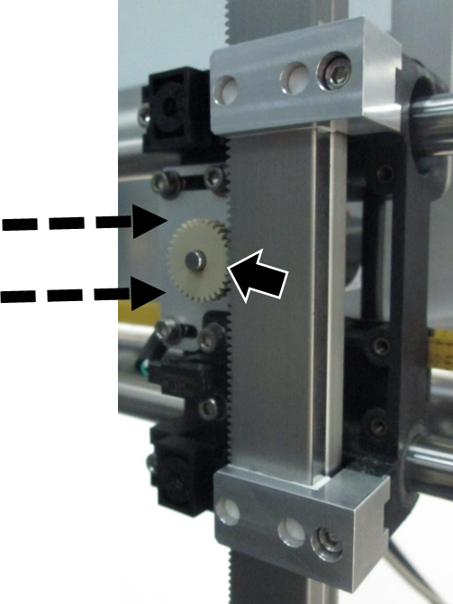
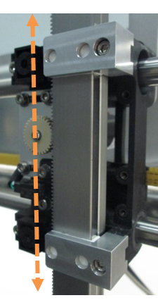

Pipettor / Z-Motor Meshing Adjustment

|
IMPORTANT—Proper meshing is critical to pipettor operation. Incorrect meshing can lead to dropped consumables and failed aspiration. |
Purpose

Do not tilt the Pipettor arm while adjusting the meshing.
The yellow dotted line shows the correct orientation of the Pipettor.
The red line shows incorrect mounting of the Pipettor arm.
The white dashed line shows the approximate center line between the Pipettor bearing surfaces.
What is Affected
A new Pipettor Z-Motor Mesh Shim Tool, ensures proper meshing of the pipettor Z-motor and the pipettor.
Previously, the service manual directed the use of a sheet of standard printer paper to check meshing.
The new Mesh Shim Tool is more reliable and easier to use.
This procedure applies to ALL pipettors on the Panther and Panther Fusion Systems.
Too much space between Z-motor and Pipettor |
|
|
|
 |
 |

Parts and Materials Required
- Proper PPE
- Panther Tool Kit
- Pipettor Z-Motor Mesh Tool
Time Required
- 1 Hour
Procedure
|
|
Note—Some images shown are of a system without the canopy or skins. Most systems will have the canopy and skins installed; the procedures will remain the same. |
|
|
Note—The Panther Sample Pipettor is shown throughout this procedure. The procedure is the same for the Reagent Pipettor and both Panther Fusion Pipettors |
- Put on proper PPE.
- Shutdown the Panther System and PC.
 Loosen (do not remove) the Z-Motor mounting screws to allow movement of the motor.
Loosen (do not remove) the Z-Motor mounting screws to allow movement of the motor.

- Slide the Mesh Shim Tool in between the pipettor and slide bearing as shown.
- Extend the tool approximately 5 mm past the top and bottom slide bearing.

- Pressing LIGHTLY on the Z-Motor to mesh the teeth on the motor gear with the teeth on the pipettor arm, tighten the 3 motor screws.
- The Shim Tool ensures proper meshing of the Z-Motor (not too tight or too loose).

- Manually move the pipettor down or up until the Shim Tool slides free.

- Proceed to Verification.
Verification
- Power on the Panther System.
- For Panther, teach all positions using Teacher SW v5.14 or higher.
- Install Teacher SW v5.14 using TB-01304, Release of Teacher Software v5.14.
- For Panther Fusion, teach all positions that apply to the adjusted pipettor.
- Complete a Pipettor cLLD & bLLD Test Procedure on the adjusted pipettor (Left, Right, Fusion).
- If a pipettor was replaced, perform a Pipettor Pressure Integrity Test. (No PQ Performance Qualification is required.)
- Release the system and monitor the customer's next run for any issues.
- Add the completion of this procedure to the Service Record.
- Attach the cLLD Test and the PI test (if performed) to the Service Record.
- Verification is complete.
 button at the top of the page to send feedback, comments, or change requests.
button at the top of the page to send feedback, comments, or change requests.